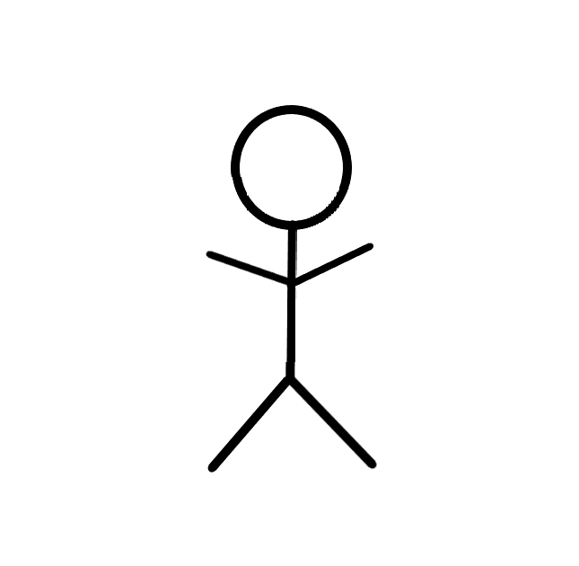

✖

Реализация
Список учеников
Cохранить
Очистить
Выбор случайного ученика
Здесь будет отображен случайный ученик:
Выбрать случайного ученика
Таймер
Начать занятие
Конец занятия
Запустить
Остановить
Рабиение по количеству учащихся в группе
Разбиение по количеству групп
Разбить на группы